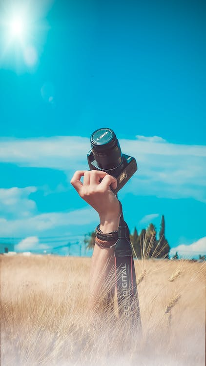
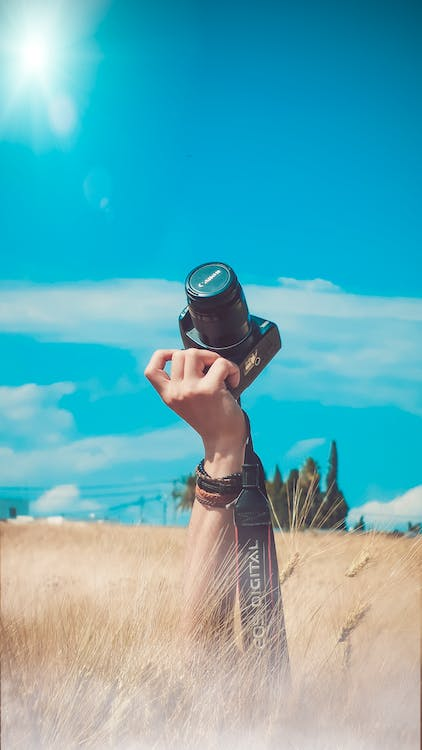

The people who make up today’s thriving photographic community are our eyes to the world. Whether established artists and journalists or passionate emerging voices, they inform us, they inspire us, they amaze us, they put our world in the broader context of history.
But that community also faces great challenges — dwindling sales, increased competition and a fragile trust in photographers’ mission to inform. Too often, those factors can make those of us in that community, photographers and photo editors alike, lose sight of what drive us.
It is for this reason that we need photographers. They are the ones who sort all the chaos of the world into images that bring clarity to the free-for-all of life. They are the witnesses and artists who can distill the mayhem and beauty that surrounds us. They call our attention to the things we miss in our everyday lives and they call our attention to events and people at a great distance from our own patch of the universe. When they direct our eyes and hearts with precision and honesty, we know what we know differently and better. Photographers teach us to look again, look harder. Look through their eyes.


 
